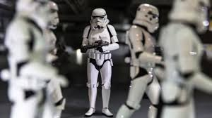

Los Soldados Imperiales, también conocidos como Soldados de Asalto Clon, Tropas de Asalto o Stormtroopers, fueron un grupo de soldados
de choque de élite del Imperio Galáctico. Al igual que los Destructores Estelares clase Imperial I y los Cazas TIE, los soldados de asalto
servían como recordatorio del poder del Emperador, extensiones de su voluntad, y un método para mantener los cientos de sistemas estelares
del Imperio bajo el yugo del miedo.
Estos soldados formaban el Cuerpo de Soldados de asalto, que operaban como una rama independiente al Ejército y la Armada Imperiales,
a pesar de que algunos de los que se encontraban destinados en la Armada eran conocidos por el nombre de "Marines".
Miembros de las Fuerzas Especiales de la Alianza Rebelde usaban numerosos términos para referirse a las tropas de asalto, incluyendo
"sombreros blancos"," soldados de plástico", y "muñecos de nieve". Otro término de argot utilizado para estos soldados era
el de "Hombres de Blanco". Incluso fueron llamados como "cabezas de cubeta" por algunos ciudadanos disidentes.
El Cuerpo de soldados de asalto no estaba directamente unido al Ejército Imperial, y mantenía su propia estructura de comando, sistema de rango, e instalaciones de soporte. Los soldados de asalto eran solo leales al Emperador, y solo seguían órdenes del personal del Ejército y de la Flota a su discreción.
La unidad básica de organización era el soldado individual. Cada soldado de asalto era asignado a un número por propósitos tácticos y para reforzar la ética Imperial de la uniformidad. Los soldados estaban organizados en escuadrones, pelotones, compañías, batallones, regimentos y legiones. Un comandante de compañía podría darle el mando a cualquier oficial regular sobre cualquier escuadrón o pelotón entregado. Un solo batallón consistía de 820 soldados, mientras que un batallón de soldados clon la República Galáctica estaba compuesto por solamente 576 hombres.
